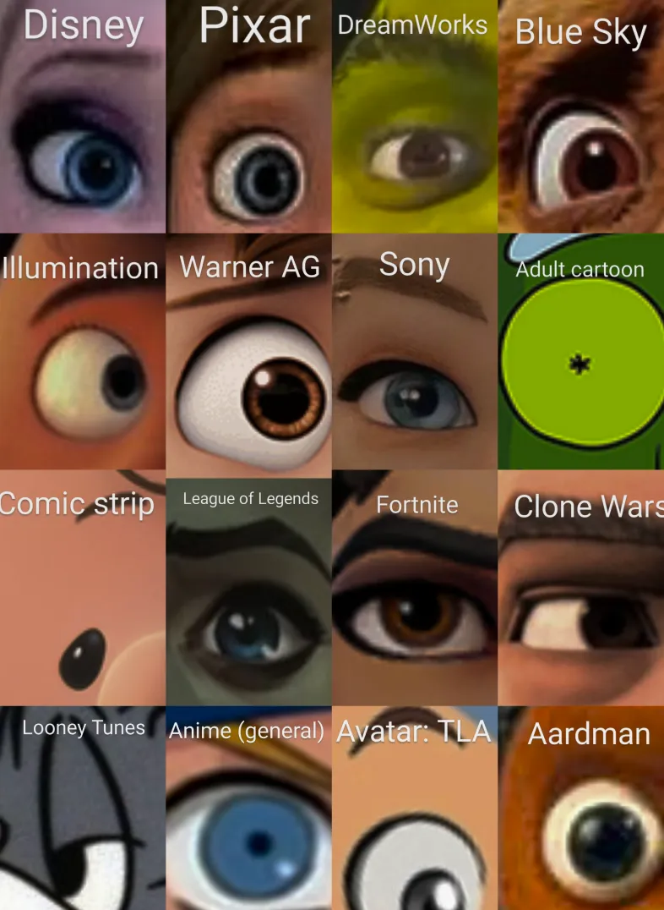
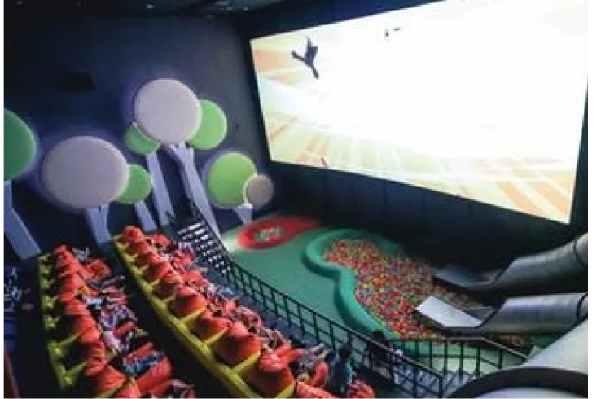
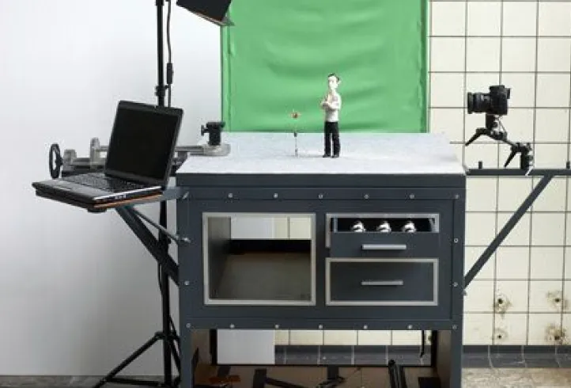

Programmation
Jour 1 : Animation traditionnelle (7 juillet)
Matin- Projection : Blanche-Neige et les Sept Nains
(Disney) - SALLE A - Atelier familial : Initiation au dessin animé
traditionnel - HALL 2
- Projection : Looney Tunes Classics
(sélection de courts-métrages) SALLE C - Conférence : "L’histoire de l’animation
traditionnelle" avec un expert en animation
-SALLE B
- Projection spéciale : Le Roi Lion (Disney) - SALLE A
Jour 2 : Animation traditionnelle(7 juillet)
Matin- Projection : Qui veut la peau de Roger
Rabbit ? - SALLE B - Atelier technique : Découvrez la rotoscopie
comment animer à partir de séquences
filmées - HALL 2
- Masterclass : "L'art de la rotoscopie" avec un
animateur professionnel SALLE C - Projection : Le Seigneur des Anneaux
(1978, Ralph Bakshi) -SALLE B
- Projection spéciale : Le Roi Lion (Disney) - SALLE A
Jour 3 : Animation numérique (9 juillet)
Matin- Projection : Adventure Time
(épisodes sélectionnés) - SALLE A - Atelier pour enfants : Créer une animation
numérique avec tablette - HALL 1
- Projection : Rick et Morty
(sélection d'épisodes) SALLE C - Conférence : "L'évolution de l'animation numérique" par un expert en animation numérique - SALLE A
- Projection spéciale : Spider-Man: Into the
Spider-Verse - SALLE A
Jour 4 : Animation 3D (10 juillet)
Matin- Projection : Shrek (Dreamworks) - SALLE B
- Atelier familial : Initiation à la modélisation
3D - HALL 1
- Projection : Les Indestructibles (Pixar) - SALLE C
- Rencontre avec un animateur 3D : "Le futur de l'animation en 3D" - HALL 2
- Projection spéciale : Toy Story (Pixar) - SALLE A
.webp)
Jour 5 : Stop Motion (11 juillet)
Matin- Projection : Wallace et Gromit : Une grande
excursion - SALLE B - Atelier stop motion : Créez votre propre mini
film en stop motion - HALL 2
- Projection : Fantastic Mr Fox (Wes Anderson)
- SALLE C - Making-of : "Les coulisses du stop motion"
avec des images exclusives et des discussions
sur le processus -SALLE B
- Projection spéciale : L'Étrange Noël de
Monsieur Jack (Tim Burton) - SALLE A
Jour 6 : Animation expérimentale (12 juillet)
Matin- Projection : Begone Dull Care
(Norman McLaren) - SALLE B - Atelier expérimental : Animation avec des
objets du quotidien - HALL 2
- Projection : Sélection de courts-métrages expérimentaux internationaux - SALLE C
- Conférence : "L’animation expérimentale,
repousser les limites
du possible" - SALLE B
- Projection spéciale : Fantasia (Disney)
– Une exploration des animations
avant-gardistes - SALLE A
.webp)
Jour 7 : Clôture et rétrospective (13 juillet)
Matin- Rétrospective : Sélection de courts-
métrages primés tout au long du festival
- SALLE A - Atelier familial : Création collective d’une
animation en stop motion - HALL 2
- Projection spéciale : Le voyage de Chihiro
(Studio Ghibli) SALLE C - Cérémonie de clôture : Annonce des gagnants
des compétitions de courts-métrages
d’animation - SALLE A
- Projection de clôture : Le géant de fer
(Brad Bird) avec une célébration finale
- SALLE A
Activité permanente pendant le festival :
Exposition interactive

Découvrez les coulisses des différents styles
d’animation avec des maquettes, croquis et
vidéos explicatives.
Coin enfants

Projections de courts-métrages animés
et ateliers ludiques pour les plus jeunes.
Atelier stop motion

Testez le stop motion avec nos professionnelles,
atelier immersif pour les grands et les petits
Télécharger le programme
complet
complet